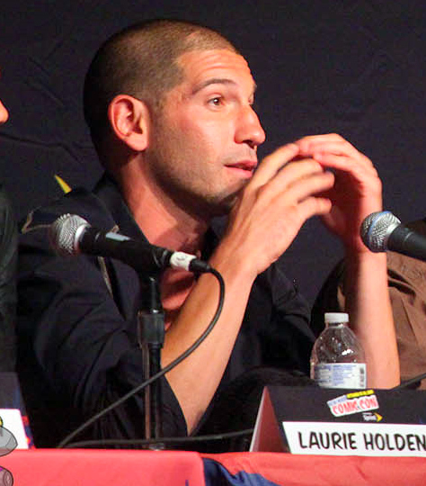
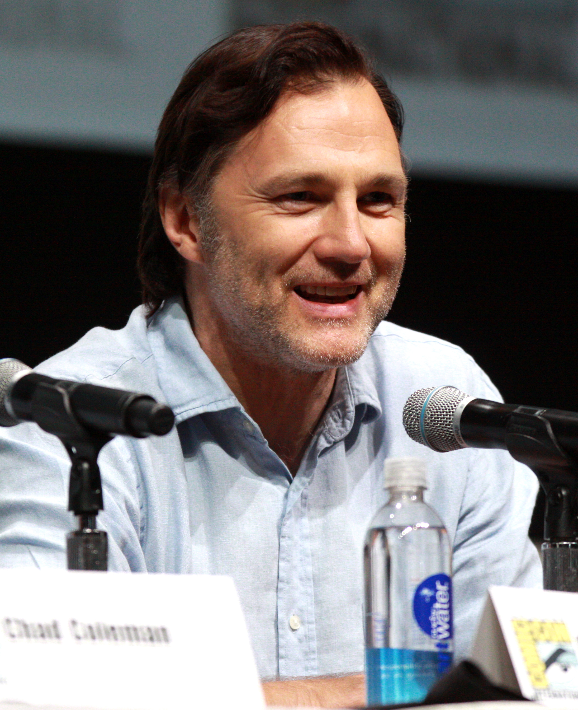

The first major antagonist in the series is Rick's best friend Shane Walsh shown here
Shane is known for his despicably selfish acts which include shooting a member of their group in the leg to use as bait so that he could get away from the zombies.
The second antagonist is the leader of a group in the prison, Tomas.
He attempts to kill Rick and other members of his group by pushing walkers towards them.
Rick has enough of his tactics and finishes him off after a quick altercation.
The main antagonist for all of the third and fourth season is the infamous Governor shown below
The Governor is known for his psychopath ways of controling people and his ruthless attempts to torture and take out all of the prison group.
The third antagonist is Joe the leader of a group known as the claimers.
Daryl joined the claimers after being seperated after the prison was destroyed but is faced with a dilema when he finds Rick, Michonne and Carl again.
He was brutally murdered by Rick after threatening to kill all of his group in front of Rick
The leader of Terminus Gareth shown here is another major antagonist of the story
He is the leader of the group of cannibals which Rick's group encounter. After Carol destroys the entire operation of Terminus Gareth makes another attempt on Rick's group but is outsmarted and later viciously killed by Rick.
The current main antagonist is a group which are known as the Wolves and are recoqnizable by the "W" carved into their forehead.
A list of smaller known antagonists include: Merle Dixon, Pete Anderson, Martinez, Andrew.